Ryugasaki, Ibaraki: things to do, food and stays
Ryugasaki · Ibaraki
Ryugasaki
Highlighted on the Ibaraki map.
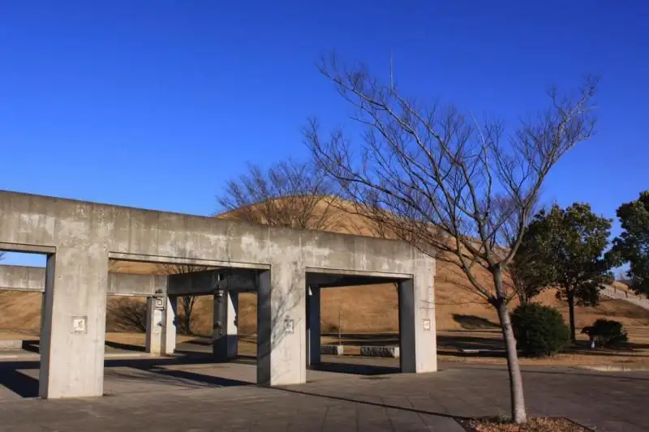
Stay
サンライズホテル
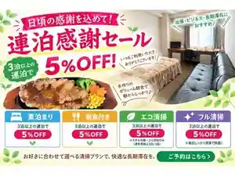
Sanraizu Hotel
喜仙
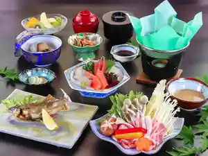
Kisen
HOTEL R9 The Yard 龍ケ崎
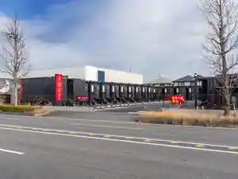
HOTEL R9 The Yard Ryu Ke Saki
さぬきグリーンホテル
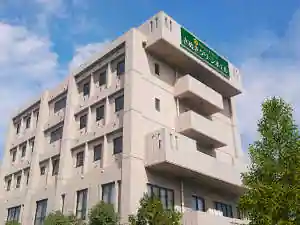
Sanuki Gurin Hotel
Hotel in Sanuki, Ryugasaki with business travelers and long stays; 8-minute walk from Jrsanuki Station.
さぬきシティホテル
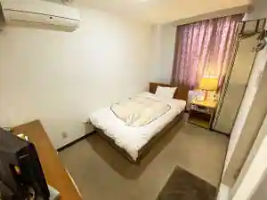
Sanuki City Hotel
Hotel in Sanuki, Ryugasaki with breakfast available and business travelers.
竜ヶ崎プラザホテル本館
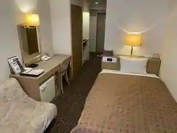
Ryugasaki Plaza Hotel Honkan
Hotel in Sanuki, Ryugasaki; 2-minute walk from Ryukesakishi Station.
竜ヶ崎プラザホテル新館
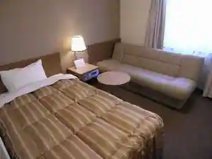
Ryugasaki Plaza Hotel Shinkan
Hotel in Sanuki, Ryugasaki; 0-minute walk from Jrryukesakishi Station.
Dining
麺屋 壱心
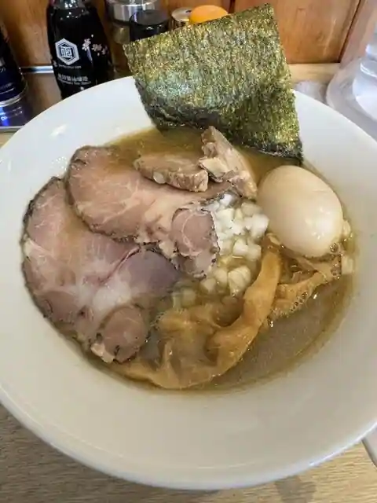
Men Ya Isshin
ラーメンスタンド とん平食堂 龍ヶ崎店
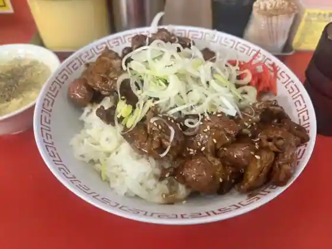
Ramen Sutando Ton Taira Shokudo Ryu Ke Saki
麺ゃ こもん
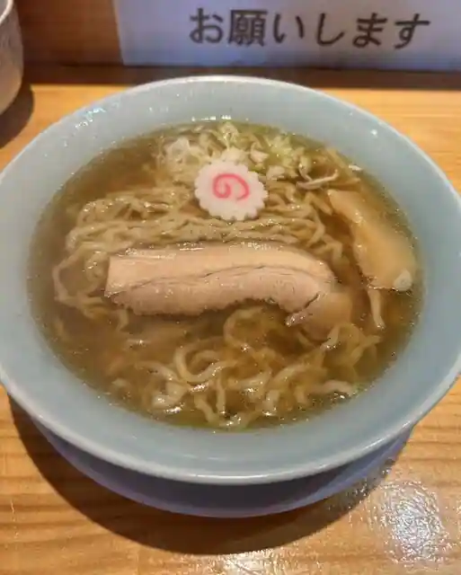
Men Ya Komon
とんかつ いそ
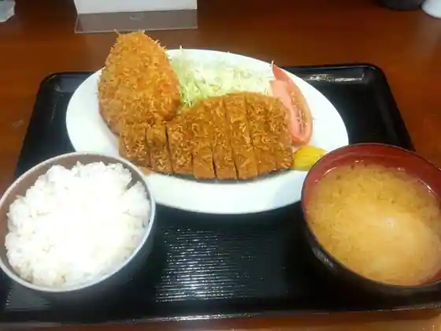
Tonkatsu Iso
鶴舞家
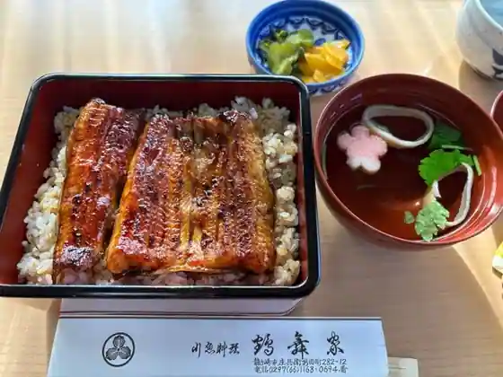
Tsurumai Ie
フレンチラーメンの店 MATOYA
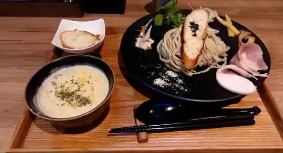
Furenchi Ramen No MATOYA
洋食厨房 Country House
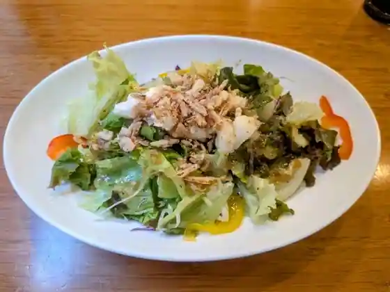
Yoshoku Chubo Country House
薬師寺そば
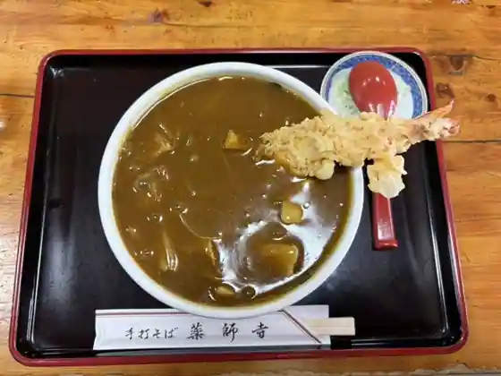
Yakushiji Soba
とむとむ 龍ヶ崎店
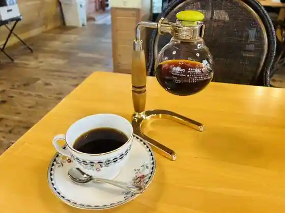
Tomutomu Ryu Ke Saki
しゃりま
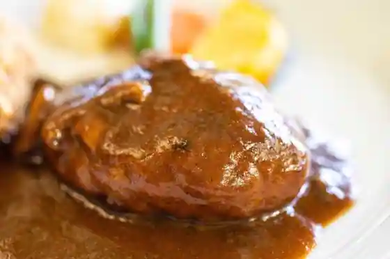
Sharima
中華食酒処 さいらい亭 龍ヶ崎店
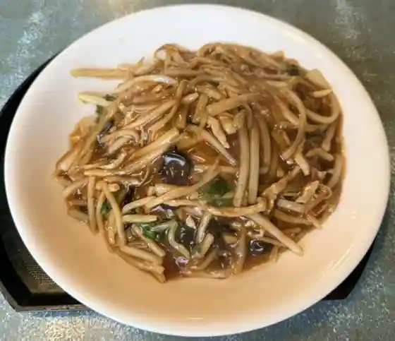
Chuka Shoku Sake Tokoro Sairai Tei Ryu Ke Saki
桑名屋
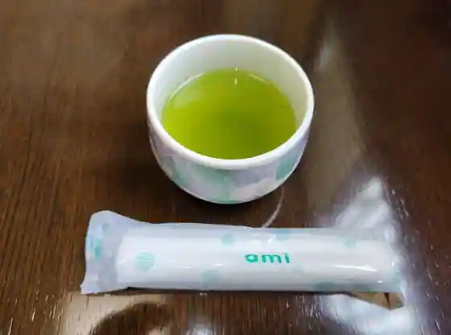
Kuwana Ya
美春食堂
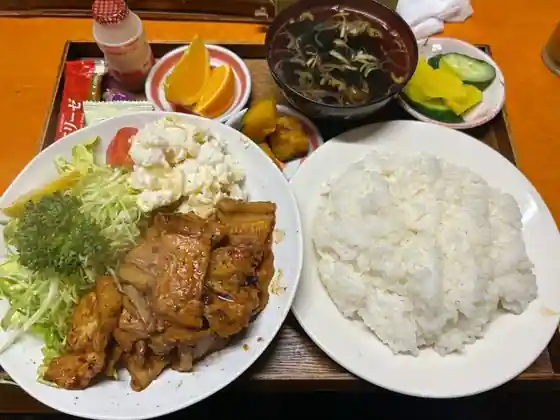
Miharu Shokudo
三楽
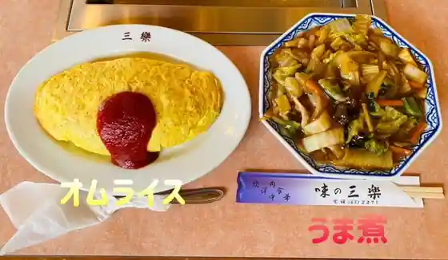
Sanraku
ラーメン ゆうきや 総本店
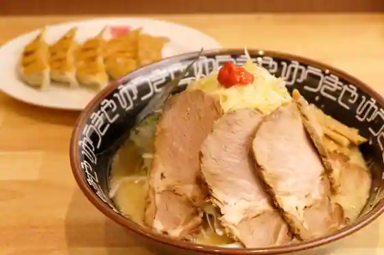
Ramen Yukiya So Hon
たけちゃん食堂
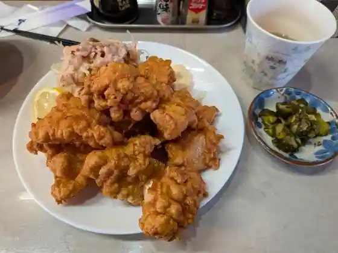
Takechan Shokudo
牛久沼夕陽食堂 樂
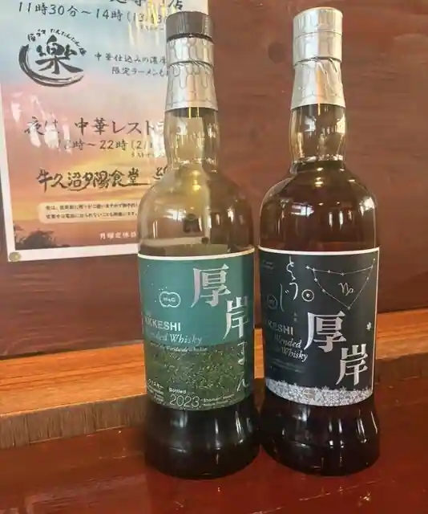
Ushikunuma Yuhi Shokudo Raku
パン アトリエ クレッセント
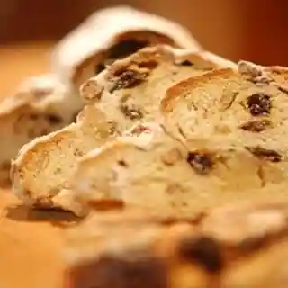
Bakery Atorie Kuressento
アルベロ
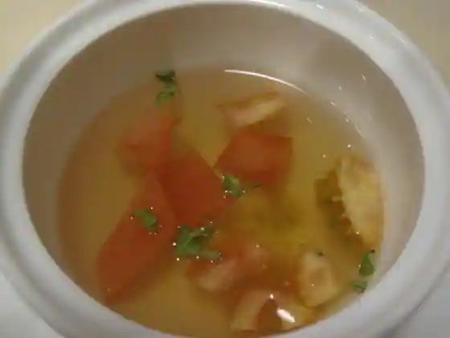
Arubero
ムーミン
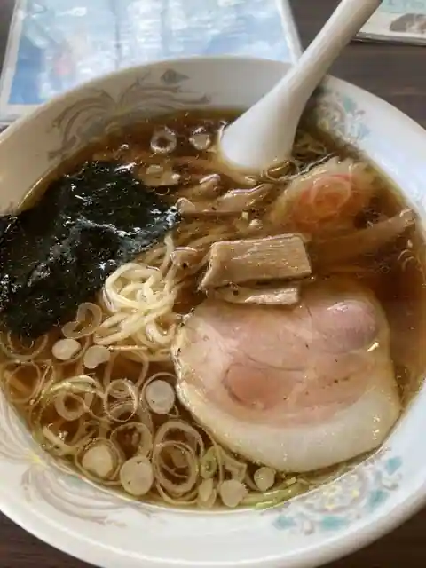
Mumin
山水閣
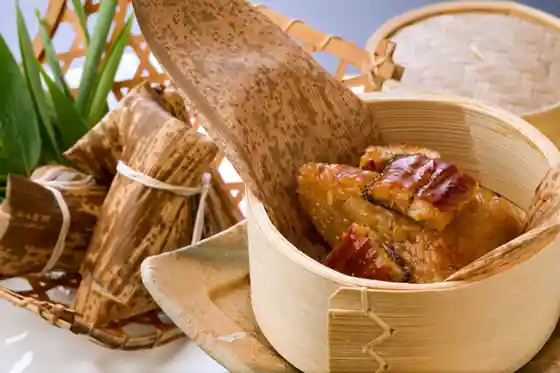
Sansui Kaku
竜ヶ崎プラザホテル 四季亭
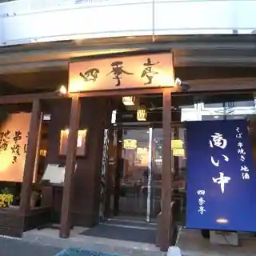
Ryugasaki Plaza Hotel Shiki Tei
龍のしょく堂
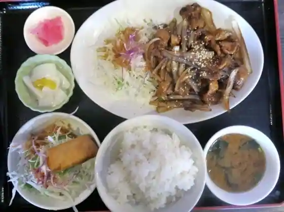
Ryu Noshoku Do
ますや食堂
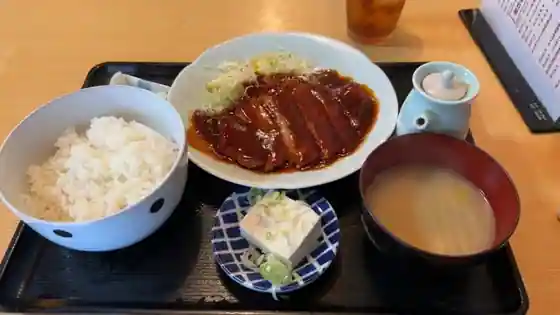
Masuya Shokudo
Sights
Hannya In
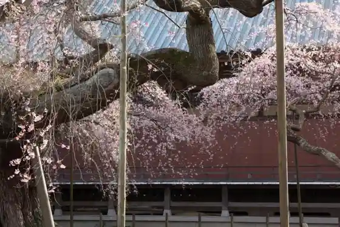
Ushikunuma
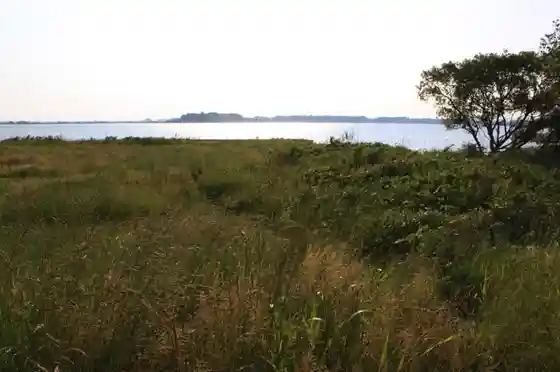
Ryugaoka Park
Ryugasaki Forest Park (Adobenchabare Ryugasaki)
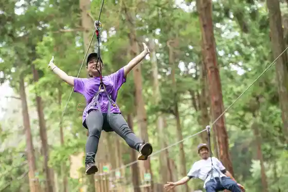
Ryugasaki Hikojo
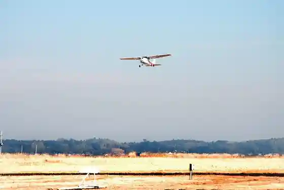
Niku Mise
Hebi Numa Park
COFFEE HOUSE Tomutomu Ryugasaki Mise
Charenji Kobo Dorasute (Ryugasaki Main Korokke)
Ryutsu Keizai Daigaku Miyake Setsurei Kinen Museum
Ryugasaki Nogyo Park Hosaku Village
Minwa Village no Katari Be Sembei Tokoro Kagi Hayashi
Amanatto no Tsukamoto
Raigo In Taho to
Sutekihausu Aono
Hokuryu Dai Park
Atago Shrine
Sumibi Ya